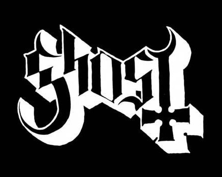
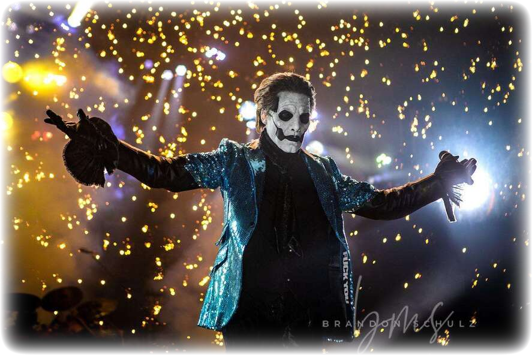
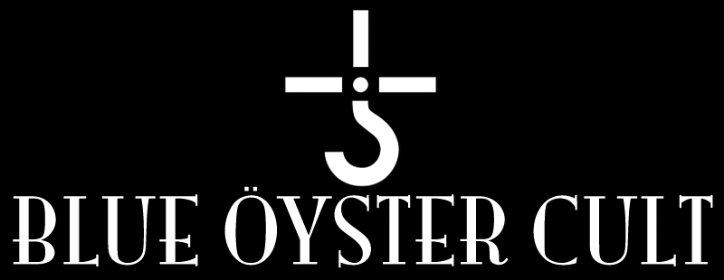
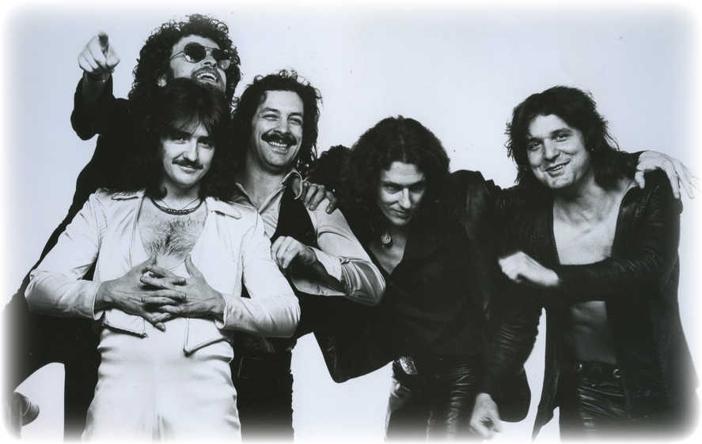
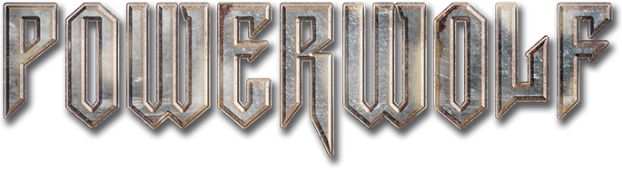
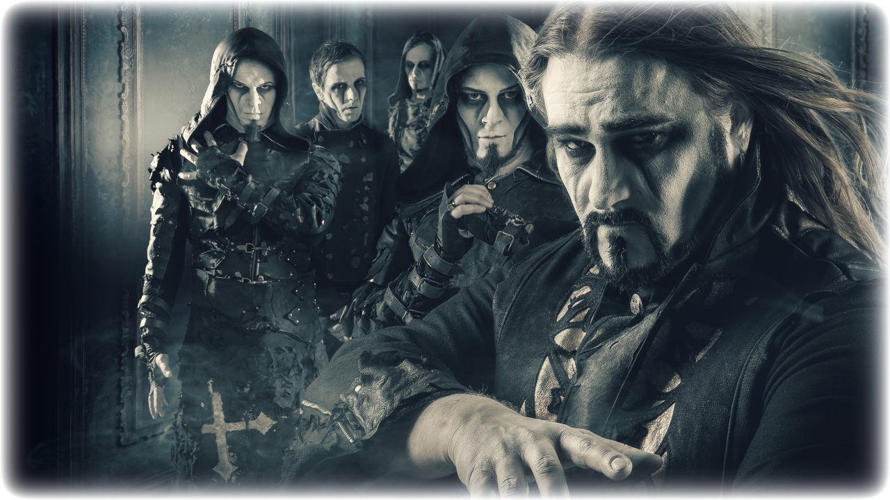

There are many different bands.
Each offer something different that set's them apart from the rest.
My personal favourite band of all would have to be...

Ghost, formerly known as Ghost B.C is a Swedish Hard-Rock band that was formed in Linkoping in 2006.
In 2010 they released a three-track demo followed by a 7-inch vinyl titled "Elizabeth" later followed by their first full album titled "Opus Eponymous"
Since then they have released 5 full length albums and have toured nearly the entirety of the world.
With fans now awaitting the announcement of the European Summer Tour (Myself included.)

It'd be a sin to mention Ghost without mentioning one of their biggest inspirations.
Them being the...

Blue Öyster Cult, sometimes abbreviated as BÖC is an American Rock band formed in Stony Brook, New York, in 1967.
They are best known for their singles
"Don't Fear The Reaper", "Burnin' for you" and "Godzilla"
Though I feel it still their songs like "Astronomy" or "Sole Survivor" don't get nearly enough love as the others.
They have been a huge inspiration to Ghost, and still rock on even today. I still believe their albums "Agents of Fortune" and "Fire of Unknown Origin" are among the greatest rock albums of all time, topping even Queen or The Clash.

The last band I'd like to mention is...

Powerwolf is a German power metal band founded in 2003 in Saarbrücken by the members of Red Aim.
They released their debut album, "Return in Bloodred", in 2005 followed by, "Lupus Dei", in 2007.
But the moment they really hit it off was with the relase of "Bible of the Beast", which skyrocketed them up into the Official German Charts for the first time in 2009.
Though simply labelled as a Power Metal band, they employ alot of Orchestral themes and powerful, almost opera like vocals in their songs, giving them quite the on stage presence.
They have kept to only ever touring in Eastern Europe but this year they have finally stepped out of their comfort zone and went on a Tour to North America
